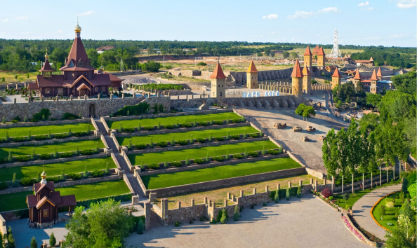
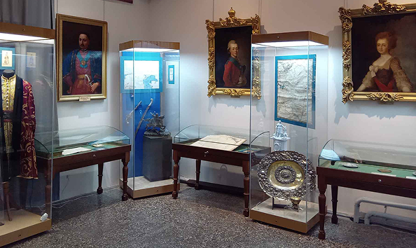
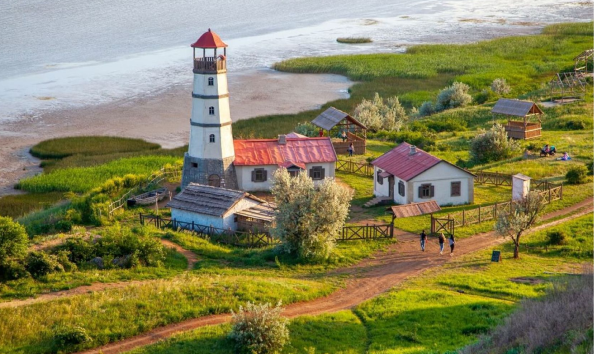
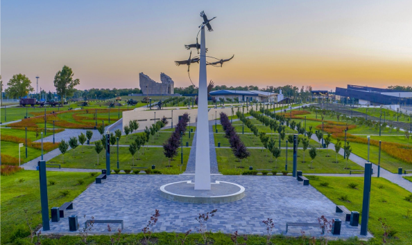
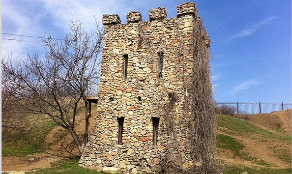
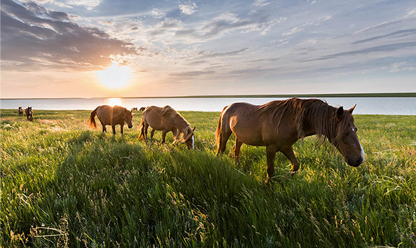

Добро пожаловать в Ростовскую область — идеальное место для тех, кто хочет познакомиться с историей, культурой и природными красотами юга России. Регион привлекает путешественников уникальным сочетанием древних традиций и современности. Здесь вы найдёте живописные степи, уютные городки и динамичные мегаполисы, такие как Ростов-на-Дону, культурную столицу юга России. Побывайте в Новочеркасске, городе, где дышит история казачества, или отправьтесь в Ростовский заповедник, чтобы насладиться природой и увидеть редких животных. Прогуляйтесь по набережной Дона или отдохните на побережье Азовского моря. Для любителей активного отдыха — рыбалка, пешие и велопрогулки, а для тех, кто ищет уединение, — уединённые курорты и санатории. Ростовская область — это также место для любителей гастрономических путешествий. Знакомьтесь с местной кухней, пробуйте блюда донской кухни и наслаждайтесь гостеприимством местных жителей.
Города, которые стоит посетить
Лучшие места для посещения
-

Парк "Лога"
Парк «Лога́» — ландшафтный парк в станице Старой Каменского района Ростовской области. Получил название по Логово́й балке, в пойме которой находится.
УЗНАТЬ БОЛЬШЕ -

Музей истории донского казачества
Один из старейших и крупнейших музеев юга России, основанный в 1886 году. В его коллекции более 150 тысяч экспонатов. Музей расположен в историческом здании в центре Новочеркасска и является ключевым центром изучения и сохранения наследия донского казачества.
УЗНАТЬ БОЛЬШЕ -

Маяк в Мержаново
Сооружение является бутафорским. Было создано в качестве декорации к телесериалу "Смотритель маяка".
УЗНАТЬ БОЛЬШЕ -

Самбекские высоты
Самый большой региональный памятный комплекс, воздвигнутый в Неклиновском районе Ростовской области недалеко от села Самбек в честь советских воинов, в том числе 130-й и 416-й стрелковых дивизий, удостоенных почётного наименования «Таганрогских», сражавшихся на линии «Миус-фронта» в 1943 году.
УЗНАТЬ БОЛЬШЕ -

Танаис (музей-заповедник)
Один из крупнейших историко-археологических музеев-заповедников России под открытым небом. Танаис является первым из созданных в России археологических музеев-заповедников. Музей базируется на участках древнего города Танаиса. Город, названный по имени реки Танаис (Дон) был основан в её устье у впадения в Меотиду (Азовское море).
УЗНАТЬ БОЛЬШЕ -

Ростовский заповедник
Один из старейших природных заповедников России, основанный в 1995 году для охраны уникальных степных экосистем. Посетить его — отличная возможность увидеть непуганых птиц, вольные табуны донских мустангов, знаменитое озеро Маныч-Гудило и цветущие по весне поля ирисов и тюльпанов.
УЗНАТЬ БОЛЬШЕ